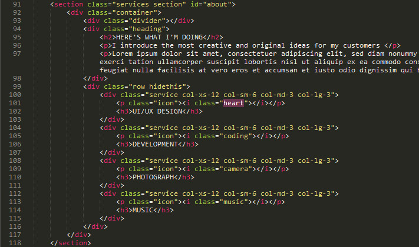

“One - Flat Theme”
“One”
Table of Contents
A) HTML Structure - top
0) Welcome Section
Here is the Welcome Section HTML Structure. You can add or remove slider images in this section.
1) Home Section
All images located at images folder. You can replace me.jpg with your own photo. The ideal pixel size for your photo is 375x375.
2) About Section
Here's the About Section HTML structure. You can change icon by changing class names (highlighted).

And here's the class list which you can use;
- heart
- bulp
- graph
- coding
- globe
- music
- pencil
- camera
- vcamera
- cloud
3) Technical Skills Section
Here is the Skills Section HTML structure. If you want to add or remove skills you can copy/paste or delete highligted structure(s). If you want to change the percent of the skill, you can change data-percent value.
4) Work Experience Section
Here is the Work Experience Section HTML structure. If you want to add or remove experiences you can copy/paste or delete highligted structure(s).
5) Portfolio Section
Here is the Portfolio Section HTML structure. If you want to add or remove portfolio items you can copy/paste or delete highligted structure(s).
If you want to change portfolio categories you can edit highligted areas.
You can add Youtube or Vimeo videos by linking embed URLs;
6) Contact Section
Here is the Contact Section HTML structure.
When contact form submited it sends e-mail to your e-mail address. You need to edit send.php and script.js file to fill your e-mail address and SMTP information.
If your website is in a folder you have to change the path of the send.php in script.js file. eg. If your web address is like this: http://www.websitename.com/myfolder/ then your send.php path is /myfolder/send.php.

I recommend Mandrill to send e-mails. Mandrill is an email infrastructure service and you can sign up for free to start sending e-mails from your website. Once you've created a Mandrill account, the SMTP credentials for your account can be found by navigating to Settings > SMTP & API Credentials.
7) Social Media Section
Here is the Social Media Section HTML structure.
8) Changing Map Location
For changing map location you need to edit js/scripts.js file. You can change map location by changing Latitude and Longitude (highlighted) values.
To find the latitude and longitude of a point you can use this tool.
9) Removing Sections
If you would like to remove a specific section of the site, you need to remove;
- Navbar item
- HTML section
- JS section from js/script.js file
B) CSS Files and Structure - top
I'm using six CSS files in this theme. The first one is a generic reset file. Many browser interpret the default behavior of html elements differently. By using a general reset CSS file, we can work round this. This file also contains some general styling, such as anchor tag colors, font-sizes, etc. Keep in mind, that these values might be overridden somewhere else in the file.
The second file is for Google Fonts.
Third file is for Bootstrap.
Fourth file is for Boxer JS plugin.
Fifth file is for Owl Carousel.
And the last file contains all of the specific stylings for the page.
If you would like to edit a specific section of the site, simply find the appropriate label in the style.css file, and then scroll down until you find the appropriate style that needs to be edited.
C) JavaScript - top
This theme imports 12 Javascript files. You can learn more about them by clicking links below.
- jQuery
- html5shiv
- jQuery Easing Plugin
- Easy Pie Chart Plugin
- Isotope Plugin
- Bootstrap JS
- Boxer
- jQuery Form Validator
- Google Maps API
- Owl Carousel
- Super Slides
- My custom scripts